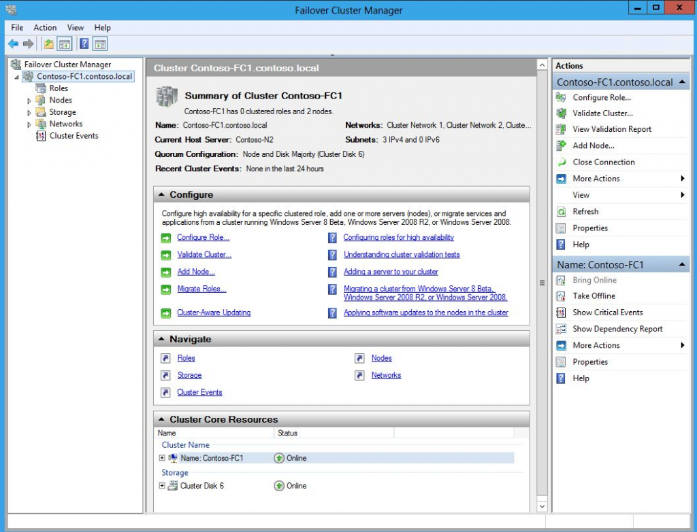

Fonte: http://blogs.msdn.com/b/clustering/archive/2012/05/01/10299698.aspx
"HA" Alta Disponibilidade
Aplicações críticas (ou não) geralmente necessitam estar disponíveis para os usuários o máximo de tempo em que estes necessitarem utilizar tais aplicações. O termo "HA" do inglês High Availability ou traduzido em "Alta Disponibilidade" referencia-se à demanda por tal disponibilidade e às soluções oferecidas para suprir esta necessidade. A tabela abaixo representa a estimativa do percentual de disponibilidade baseado no tempo de downtime por ano. fonte: http://redes-e-servidores.blogspot.com.br/2011/02/alta-disponibilidade-medicao-i.html?_sm_au_=iVVQn0jJJkfqJ8rR
{kind=link}
Windows Server Failover Clustering (WSFC)
Uma das opções que a Microsoft oferece para provimento de HA em vários de seus produtos (incluindo o SQL Server, que será o ponto focal dos artigos da categoria [HADR]) é o WSFC (Windows Server Failover Clustering). Para beneficiar-se dos recursos do WSFC, a aplicação necessita ser Cluster Aware, ou seja, capaz de trabalhar em conjunto com o Windows para utilizar-se das features de Alta Disponibilidade disponíveis. Um ponto muito importante para usufruto de todas os benefícios do WSFC, é o bom entendimento da finalidade e funcionamento do WSFC.
Pré requisitos
Para que seja realizado o deploy simples de um WSFC para receber quaisquer aplicações suportadas, são necessários (ou recomendados) alguns itens, listados a seguir:
- 2 ou mais servidores com Windows Server (mesma versão) - (Requerido);
- Todos os nodes do cluster no mesmo Domínio - (Requerido);
- Quórum (Disco ou FileShare) para atuar como Witness onde se aplica - (Recomendado);
- Multiplas Interfaces de rede para redes privada (Heartbeat) e pública - (rede corporativa) (Recomendado);
- Storage compartilhadas - Quando a aplicação exigir (Requerido);
Aplicações "Cluster Aware"
Conforme já citado anteriormente, uma aplicação precisa ser Cluster Aware, ou seja, ser capaz de tirar vantagens das funcionalidades e benefícios do WSFC, para que a mesma possa ser instalada desta forma. Abaixo, alguns exemplos de aplicações e serviços que pode ser instalados em um WSFC:
- SQL Server (Database Engine);
- SQL Server (Analysis Services - SSAS);
- Exchange Server;
- DHCP Server;
- MSDTC (Microsoft Distributed Transaction Coordinator);
- File Server;
- MSMQ (Microsoft Message Queue);
- Etc
Concluindo
A disponibilidade de uma aplicação crítica é tão importante quanto a recuperabilidade da mesma, uma vez que a falha de uma aplicação em momentos críticos para o negócio, podem acarretar em perdas financeiras e grandes prejuízos para o negócio. A ideia deste post é apenas um overview sobre o tema "Alta Disponibilidade" bem como um breve descritivo do serviço "WSFC (Windows Server Failover Clustering)". Em outras postagens neste mesmo blog, é pretendido a criação de artigos com maiores detalhes sobre Alta Disponbilidade, Disaster Recovery, WSFC e AlwaysOn.
REFERÊNCIAS:
- Visão geral de Clustering de Failover
- https://technet.microsoft.com/pt-br/library/Hh831579.aspx
- Cluster-Aware Applications
- https://technet.microsoft.com/pt-br/library/Cc737366%28v=WS.10%29.aspx
- Criar um cluster de failover
- https://technet.microsoft.com/pt-br/library/Dn505754.aspx
Abraços,
Edvaldo Castro SQL Server - Data Platform Consultant MTAC – Microsoft Technical Audience Contributor ../..// - (61) 9636 - 0246 http://www.twitter.com/edvaldocastro02 http://facebook.com/edvaldocastro